Control de versiones
Vamos a realizar la practica de control de versiones que consite en explicar como realizar comando de git desde la pagina learngitbranching y explicare como he realizado mi parte las cuales son Acelerando 4 y Hasta el origen y mas alla 8.
Acelerando 4
Lo primero que hay que hacer es comprobar con un git checkout las diferentes ramas que tenemos
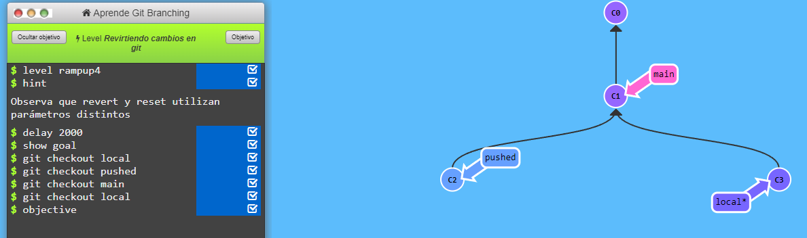
Ahora abrimos C1 en la rama local mediante el comando : git revert HEAD~1
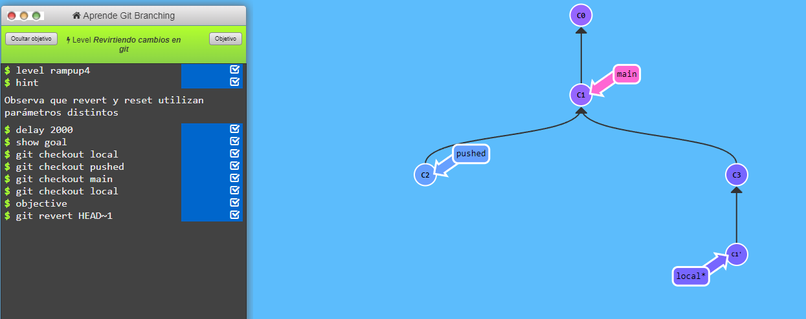
Volvemos a cerrar el c1 que estaba en la rama local con git reset HEAD~1
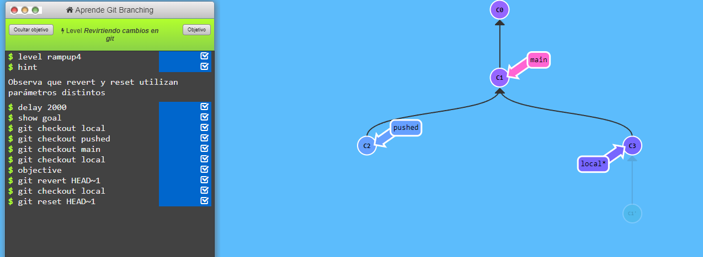
Nos movemos a la rama C2 que es pushed con el comando : git checkout pushed
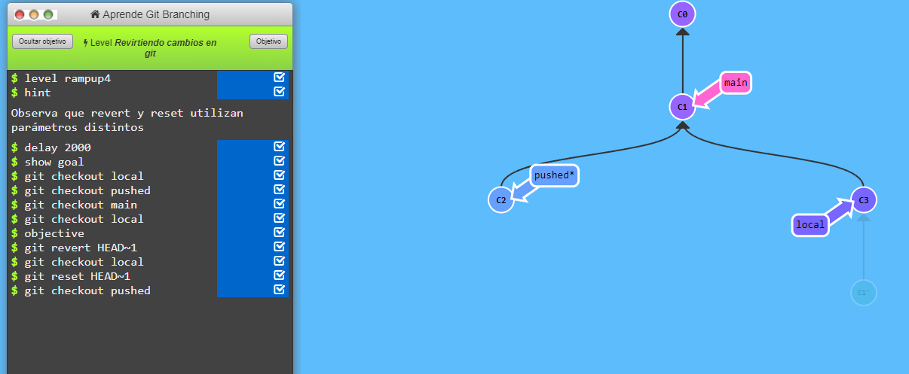
Seguimos con hacer un : git revert HEAD~1 , lo que hace es abrir un nuevo commit con el contenido del c1 en la rama pushed
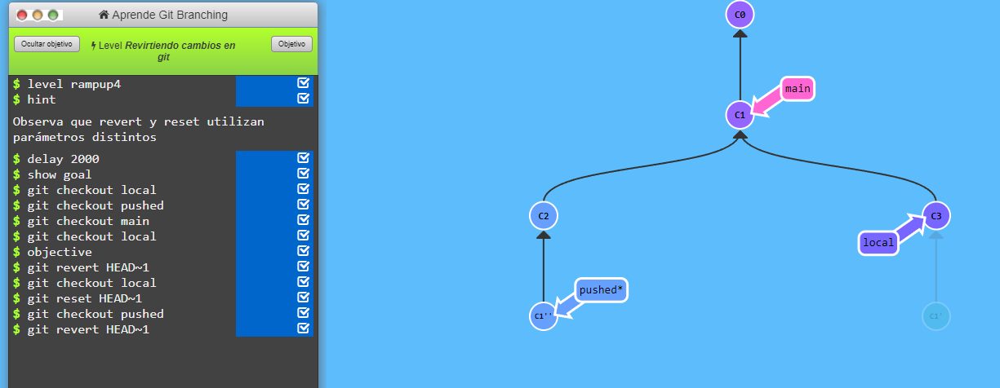
Quitamos la rama de local que es C3 ya que no va ser util y eso se consigue con : 1 paso "git checkout local " que es para volver a la rama local , 2º paso "git reset Head~1" que asi cerraremos la rama que no vamos a utilizar
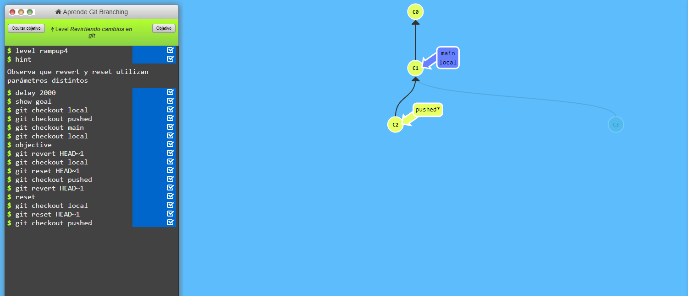
Ya por ultimo volvemos a la rama pushed con otra vez el comando : git checkout pushed , y ya por ultimo se haria el ultimo comando que seria Git revert HEAD
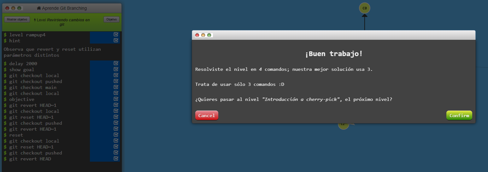
Hasta el origen y mas alla 8
Esta es el ejercicio segun es planteado , el recuadro rosa es el objetivo a conseguir y una vez conseguido se terminara y habras realizado bien el ejercicio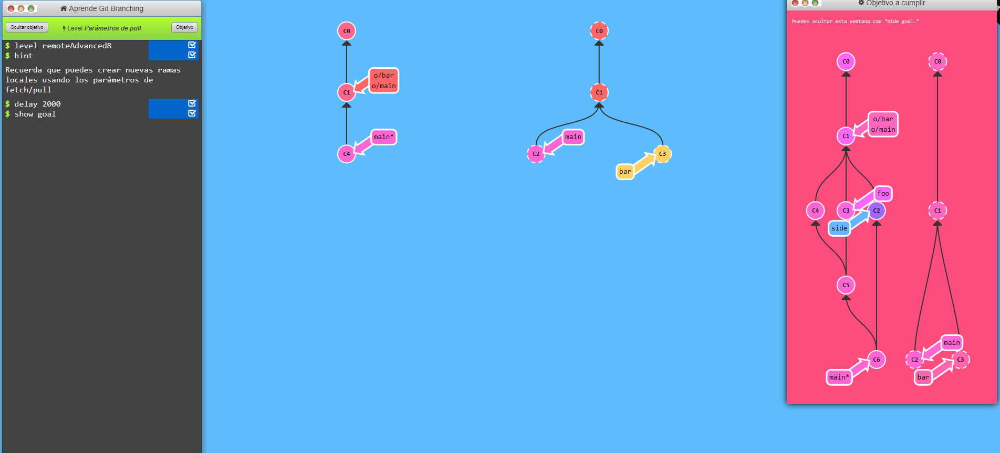
Paso 1º: Lo primero que hacemos en iniciar el ejercicio , para empezar utilizamos un git pull origin bar:foo -> este comando lo que hace es buscar nuevos cambios del repositorio remoto y actualizar nuestro repositorio 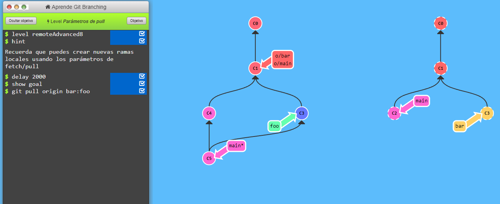
Paso 2º: El segundo comando que vamos a introducir seria git pull origin main:side -> este comando se usa para descargar los cambios del side para integrarlo en el main de nuestro repositorio local 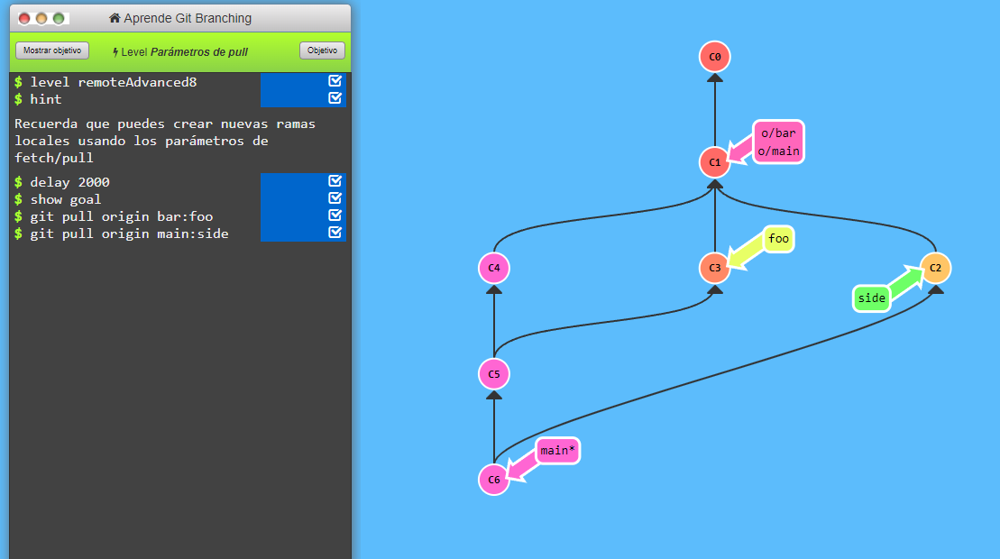
por ultimo ya estaria terminado ya que solo serian neceasarios estos 2 comandos y te saldria en pantalla una imagen que te dira que esta bien realizado.
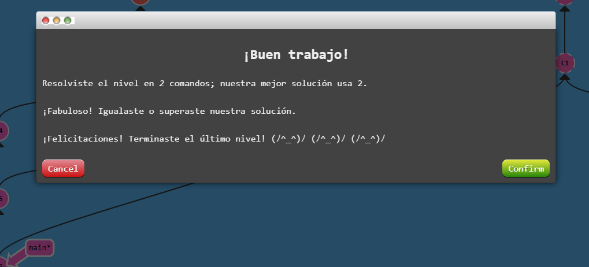